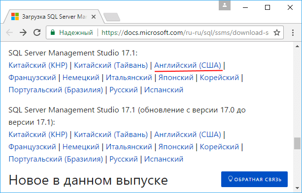
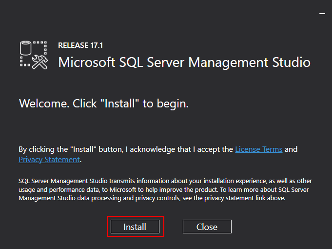
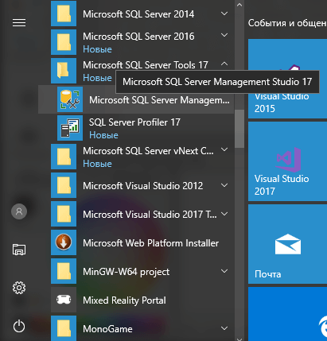
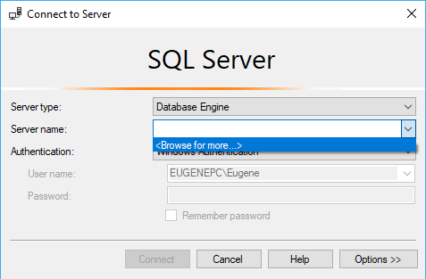
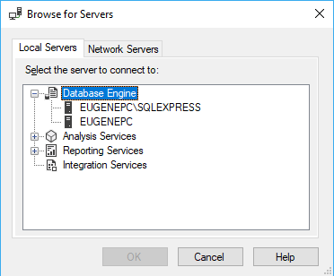
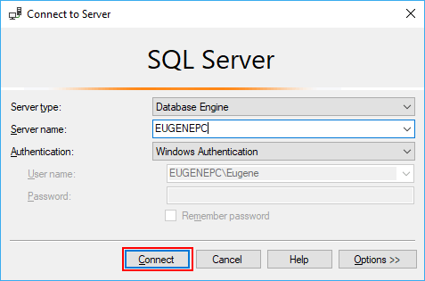
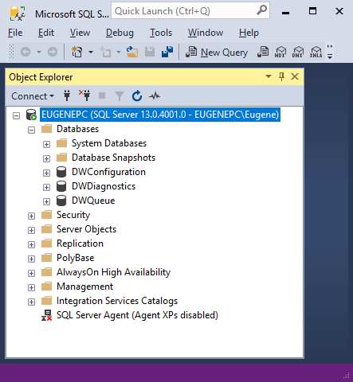

Для удобного управления базами данных и различными опциями и настройками в MS SQL Server установим специальное средство администрирования, которое называется SQL Server Management Studio (SSMS). Данную программу можно использовать для создания баз данных и их таблиц, написания и выполнения запросов к бд, а также для много другого.
Чтобы установить SSMS, перейдем на страницу https://docs.microsoft.com/ru-ru/sql/ssms/download-sql-server-management-studio-ssms. Ближе к низу станицы найдем ссылки на версии для различных локалей. Загрузим версию для английского языка (либо при желании можно выбрать локализованную версию на любом другом языке):
Несмотря на то, что эта версия SSMS имеет номер 17, она подходит и к MS SQL Server 2016 и даже к более ранним версиям сервера.
После загрузки запустим программу установки SSMS:
Для установки нажмем на кнопку Install.
После установки найдем SQL Server Management Studio в меню Пуск среди установленных программ в подпункте Microsoft SQL Server Tools 2017:
Итак, запустим программу. Вначале нам будет предложено подключиться к нужному серверу.
В поле "Server name" выберем в выпадающем списке "Browse for more...". И нам откроется окно, где необходимо будет выбрать нужный сервер:
В моем случае на локальном компьютере установлено два сервера выпуск Express и выпуск Developer. Но по имени я могу понять, что первый элемент представляет Express, и соответственно мне надо выбрать второй элемент. Если на локальном компьютере установлен только один выпуск, то соответственно выбирать не придется.
После выбора сервера его название отобразится в поле "Server name". И далее для подключения к нему необходимо будет нажать на кнопку Connect:
И после успешного подключения программа откроет содержимое сервера - все его базы данных и другие компоненты:
